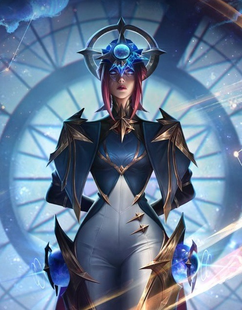
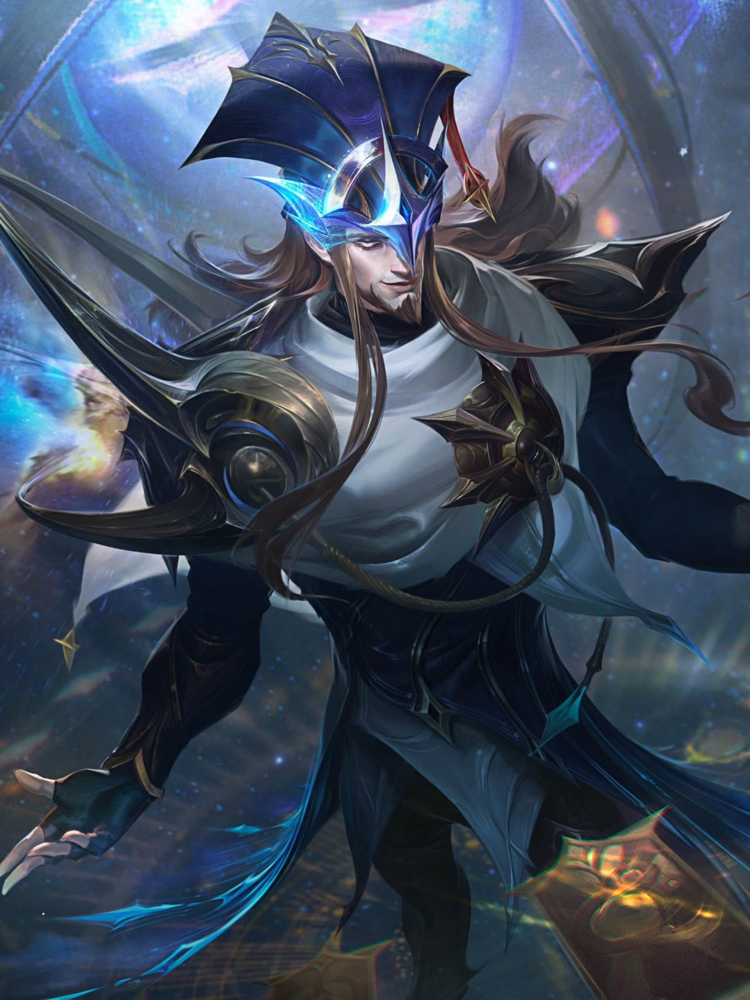
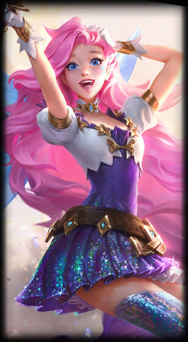

Camille, a sombra de aço
Munida para agir além dos limites da lei, Camille é a chefe de inteligência do Clã Ferros e uma elegante agente de elite, responsável pelo bom funcionamento da máquina de Piltover e de Zaun, seu submundo.
Ler maisTwisted Fate, o mestre das cartas
Twisted Fate é um infame trapaceiro que apostou e encantou tudo em seu caminho por boa parte do mundo, conquistando a inimizade e admiração tanto de ricos quanto tolos.
Ler maisSeraphine, A Cantora Sonhadora
Nascida em Piltover e filha de zaunitas, Seraphine é capaz de ouvir a alma das pessoas. O mundo canta para ela, e ela canta em resposta.
Ler mais